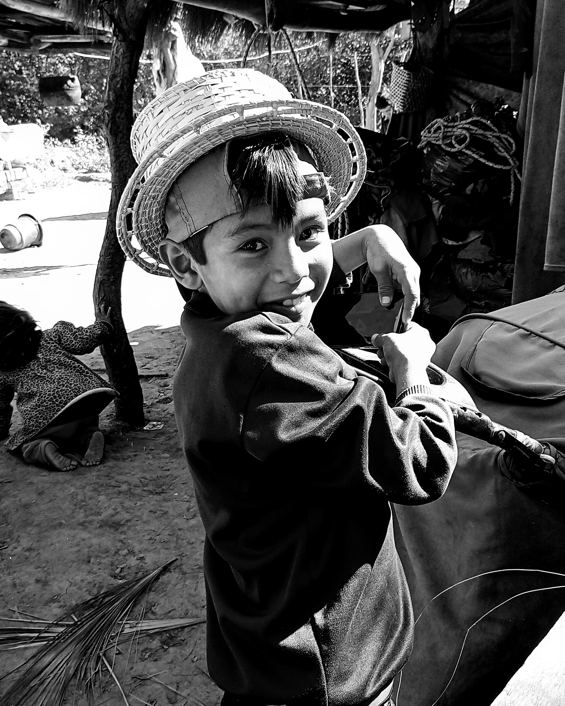
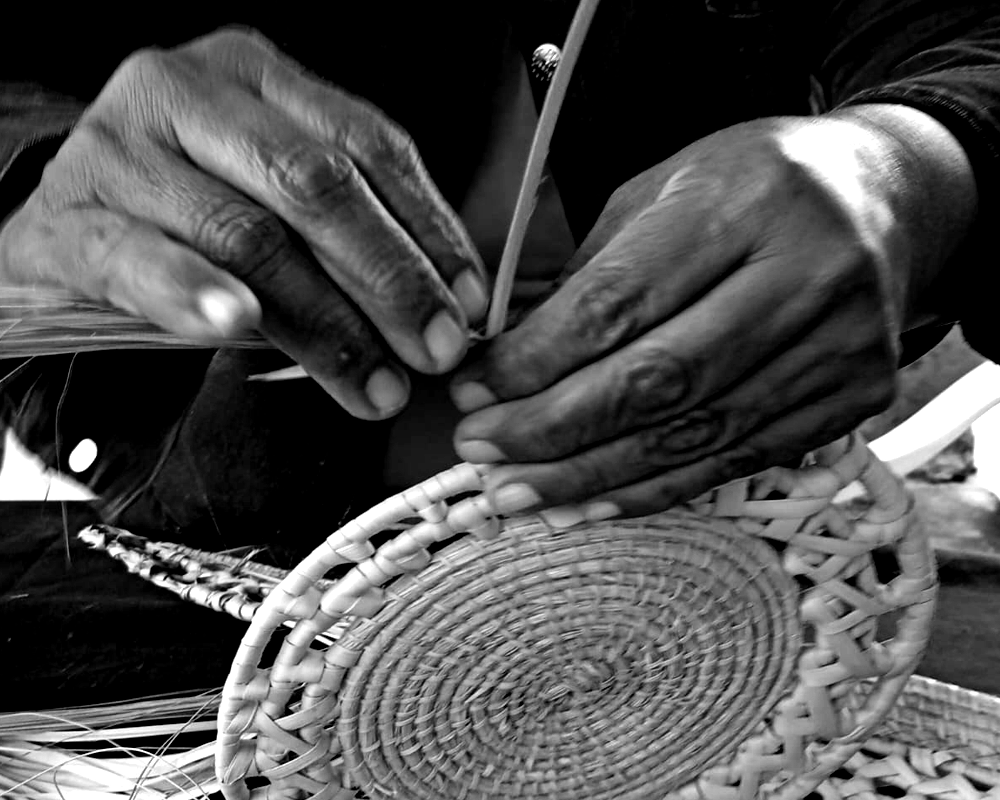
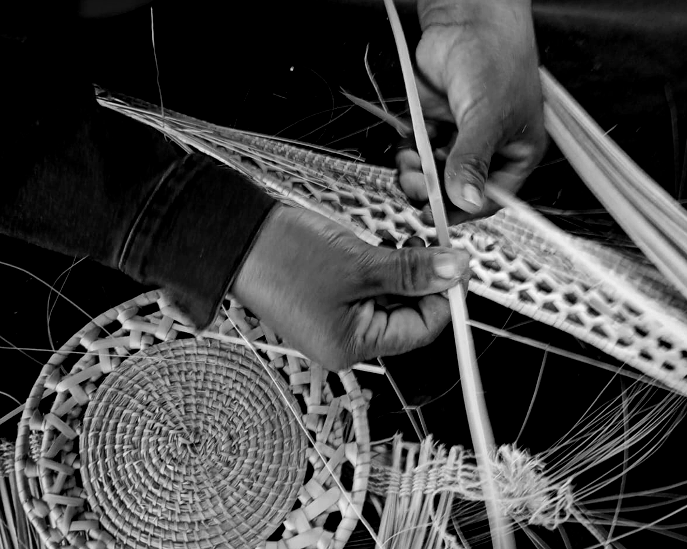
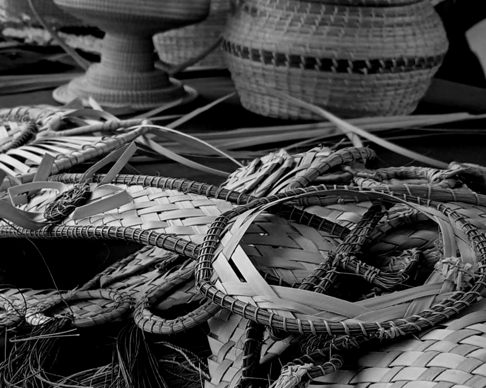
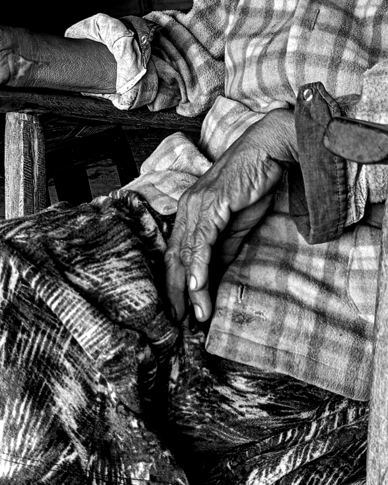
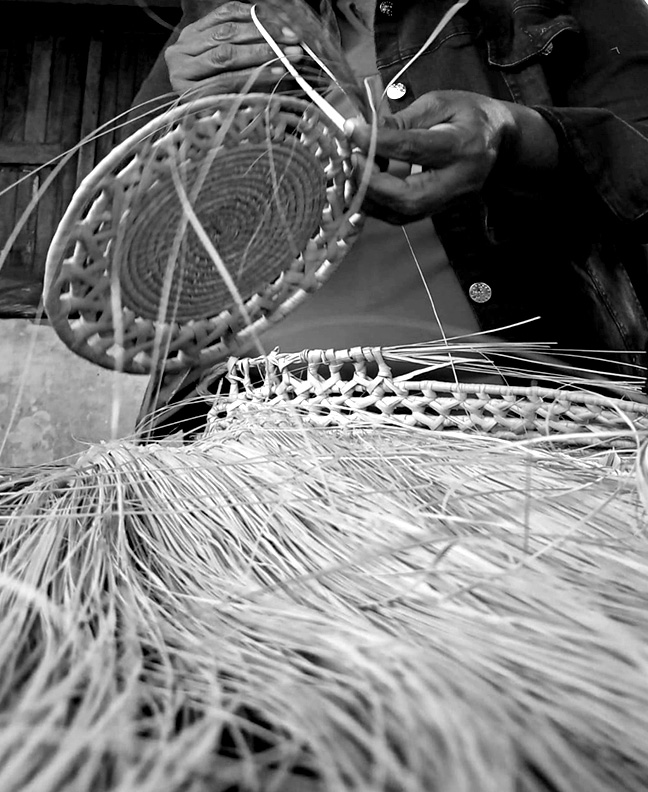
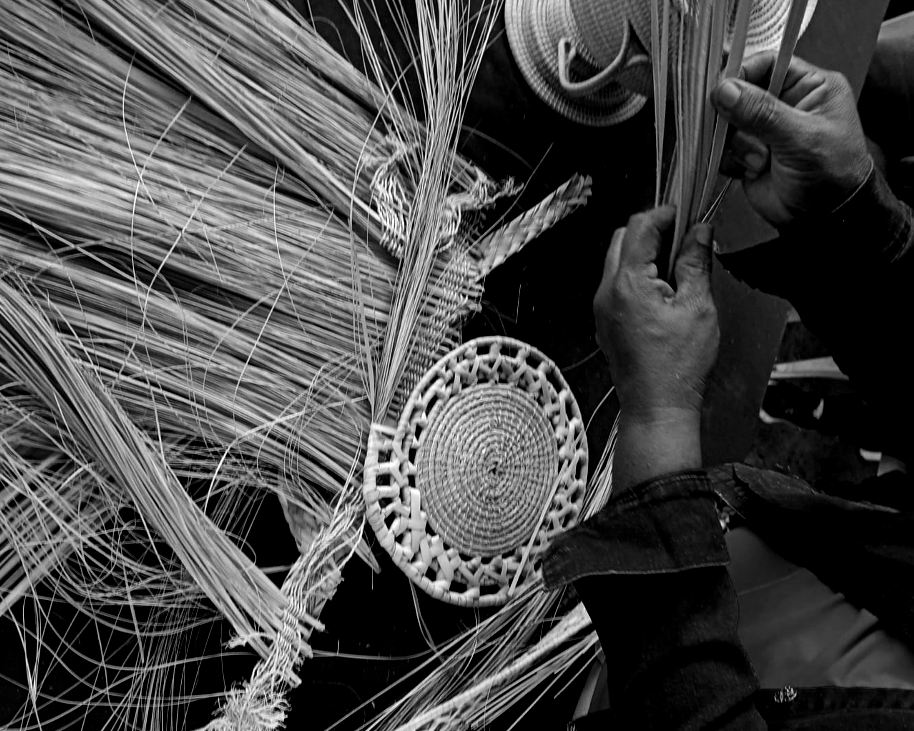
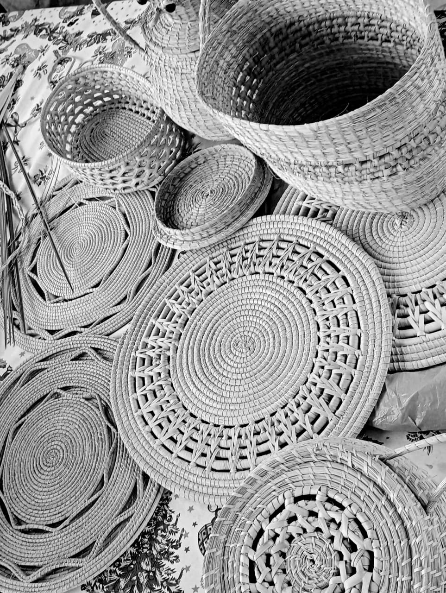

Donde el hilo se cruza, la memoria respira
TRAMA
VIVA
Archivo fotográfico sobre el arte ancestral de las mujeres Pilagá.
El Proyecto
Arte, raíz y permanencia.
Trama Viva honra el trabajo artesanal de las comunidades originarias de Pozo del Tigre, una localidad ubicada en el interior de la provincia de Formosa.
A través de una mirada íntima y poética, busca visibilizar y poner en valor los gestos, los materiales y los silencios que habitan el trabajo artesanal.
Este proyecto nace desde la ternura y el compromiso, con la esperanza de despertar en quien mira un sentido de pertenencia, respeto y asombro hacia una cultura que resiste, enseña y abraza
Cada tejido encierra una memoria ancestral transmitida de generación en generación. Las manos que crean estas piezas no solo producen objetos: construyen relatos, preservan símbolos y sostienen una identidad colectiva.
Trama Viva propone una pausa para mirar con atención, para reconocer en cada textura una forma de resistencia cultural, un gesto de cuidado y una expresión viva del territorio formoseño.

Cada hilo es una historia.
Cada mano, un puente entre generaciones.
Galería Viva
Texturas que cuentan historias








Las Artesanas
Mujeres que sostienen la memoria
Darmarias
Aprendió a tejer de su abuela.
Paula
Guarda saberes antiguos.
Ana
Teje historias de comunidad.
Acompaña la trama